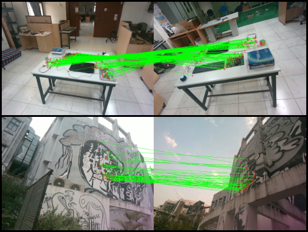
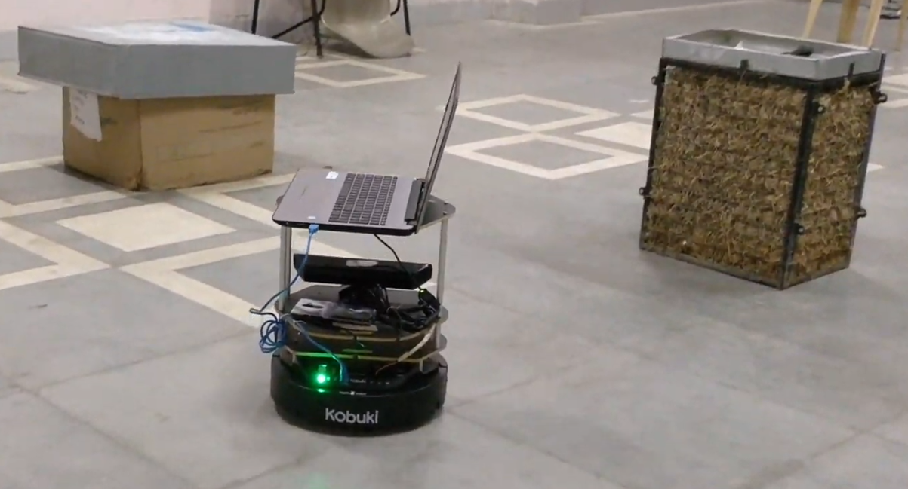

|
I am a graduate student at the University of Toronto pursuing an emphasis in robotics. Previously, I worked as an intern at Gatik.ai as a Software Engineer in the Perception Team. I was also the Team Lead for the Radar Team at aUToronto where I led a group of undergraduate and graduate students to develop algorithms for the perception stack of autonomous vehicles. I also spent some time at Autonomous Space Robotics Lab (ASRL) under the guidance of Prof. Tim Barfoot where I worked on the project of deploying self-supervised lidar segmentation network on the Jackal Robot. I am interested in the general area of perception and deep-learning. Besides research, I enjoy singing, travelling and playing chess. |

|
News
- Dec 2022: Completed the internship at Gatik.ai as a Software Engineer in the Perception Team.
- June 2022: aUToronto wins the first competition of the four-year AutoDrive Challenge 2 continuing the five year winning streak.
- May 2022: Joining Gatik.ai as a Software Engineering Intern with the Perception Team.
- Dec 2021: Joining aUToronto as the Radar Team Lead.
- Oct 2021: Paper published in IROS 2021: RoRD: Rotation Robust Descriptors and Orthographic Views for Local Feature Matching
- Sept 2021: Joining Autonomous Space Robotics Lab (ASRL) as an MEng. student under the guidance of Prof. Tim Barfoot.
- Sept 2021: Started MEng. at the University of Toronto Institute of Aerospace Studies with an emphasis in robotics.
Projects
|  |
Udit Singh Parihar, Aniket Gujarathi, Kinal Mehta, Satyajit Tourani, Sourav Garg, Michael Milford, and K. Madhava Krishna 2021 IEEE/RSJ International Conference on Intelligent Robots and Systems (IROS). [Official Website] We present a novel framework that combines learning of invariant descriptors through data augmentation and orthographic viewpoint projection. We propose rotation-robust local descriptors, learnt through training data augmentation based on rotation homographies, and a correspondence ensemble technique that combines vanilla feature correspondences with those obtained through rotation-robust features. Using a range of benchmark datasets as well as contributing a new bespoke dataset for this research domain, we evaluate the effectiveness of the proposed approach on key tasks including pose estimation and visual place recognition. |
|
Aniket Gujarathi, Akshay Kulkarni, Unmesh Patil, Yogesh Phalak, Rajeshree Deotalu, Aman Jain, Navid Panchi, Ashwin Dhabale, and Shital S. Chiddarwar Capstone Project. [Official Website] We design and develop a low-cost autonomous delivery robot. The robot is equipped with multiple onboard sensors - Orbecc Astra Camera, YDLidar X4, IMU, and IR, for perception and state-estimation. The purpose of this project was to develop the autonomy stack for delivery robots. |
|
|
Unmesh Patil, Aniket Gujarathi, Akshay Kulkarni, Aman Jain, Lokeshkumar Malke, Radhika Tekade, Kartik Paigwar, and Pradyumn Chaturvedi IEEE International Conference on Robotic Computing (IRC) Navid Panchi, Khush Agrawal, Unmesh Patil, Aniket Gujarathi, Aman Jain, Harsha Namdeo, and Shital S Chiddarwar International Journal of Semantic Computing [Official Website] In this work, we design a multi-storey surveillance robot that works on a novel distributed push-pull mechanism to climb stairs. We also add a camera to assist in detecting the stairs and estimating the relative pose to ensure accurate navigation. We further extend our idea to use stair segmentation and behavioral cloning for stair climbing. |
|
|  |
Aniket Gujarathi and Unmesh Patil IvLabs Project [ Official Website] In this work, we use a TurtleBot to explore an unseen environment and generate a 3D map using RTABMap in ROS. This aim of this project is to learn ROS and deploy ROS packages on a real robot. |